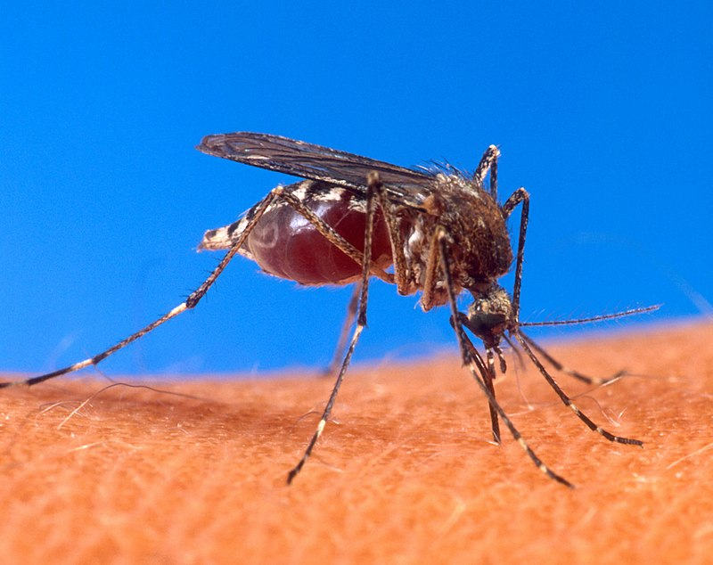

Bienvenido, analista.
Se le proveerá de información general del dengue.
Dengue
El dengue es una enfermedad viral transmitida por mosquitos, principalmente por el mosquito Aedes aegypti. Es prevalente en regiones tropicales y subtropicales.
Síntomas
- Fiebre alta
- Dolor de cabeza
- Dolor detrás de los ojos
- Dolor muscular y articular
- Náuseas y vómitos
- Erupciones en la piel
- Sangrado leve (encías o nariz)
Transmisión
El dengue se transmite a través de la picadura de mosquitos infectados. No se transmite directamente de persona a persona.
Prevención
- Usar repelente de insectos
- Utilizar ropa de manga larga y pantalones
- Instalar mosquiteros en ventanas y puertas
- Eliminar recipientes con agua estancada
Tratamiento
No existe un tratamiento específico para el dengue. Se recomienda:
- Reposo
- Hidratación adecuada
- Analgésicos para aliviar el dolor (evitar aspirina y otros antiinflamatorios no esteroideos)